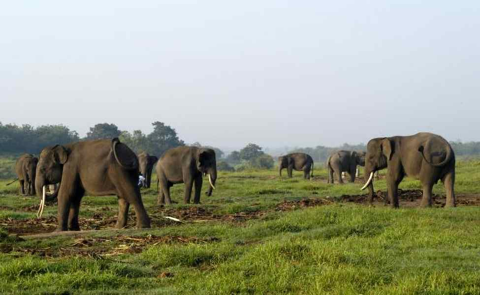
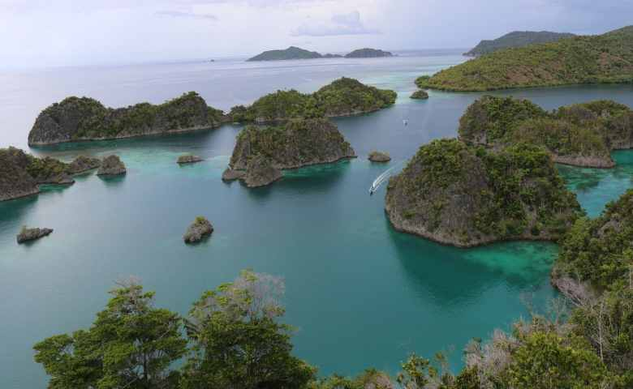

PARIWISATA INDONESIA

PURA BESAKIH
Pura Agung Besakih adalah pura terbesar dan termegah di Bali. Pulau ini terletak di Desa Besakih, Kecamatan Rendang, berada di lereng sebelah barat daya Gunung Agung, gunung tertinggi di Bali. Pura Agung Besakih memiliki gaya arsitektur yang mengagumkan khas Bali dan berada di ketinggian 915 kaki di kaki Gunung Agung dengan memukau. Bangunan yang dibangun sejak abad ke-10 Masehi ini menjadi pusat kegiatan spiritual Hindu Dharma di Pulau Dewata.
KEPULAUAN DERAWAN
Kepulauan Derawan adalah sebuah kepulauan yang berada di Kabupaten Berau, Kalimantan Timur. Di kepulauan ini terdapat sejumlah objek wisata bahari menawan, salah satunya Taman Bawah Laut yang diminati wisatawan mancanegara terutama para penyelam kelas dunia. Saat pertama kali menginjakan kaki disini, jangan heran bila Toppers akan disambut dengan hamparan pasir putih yang mempesona. Warna airnya yang sangat jernih juga akan bikin kamu betah untuk berlama-lama di kawasan ini. Panorama alam ini menjadi sajian liburan utama bagi wisatawan dalam berkunjung

TAMAN NASIONAL WAY KAMBAS
Taman Nasional Way Kambas (TNKW) Lampung ditetapkan sebagai kawasan Taman Warisan ASEAN (ASEAN Heritage Park) yang ke-36, pada tanggal 25 Juli 2016. Artinya, Taman Nasional Way Kambas ini menjadi Taman Warisan ASEAN ke-4 di Indonesia. Terletak di ujung selatan Sumatera atau 110 km dari Bandar Lampung, TNKW merupakan salah satu Taman Nasional pertama dan tertua di Indonesia. Taman Nasional ini menempati 1.300 km persegi dari hutan dataran rendah pantai sekitar Sungai Way Kambas di pantai timur Provinsi Lampung.
PANTAI PARAI TENGGIRI
Pasti diantara kamu sudah pernah menyaksikan film populer Laskar Pelangi yang berlatar di Pulang Belitung, bukan? Selain alur ceritanya yang menarik, lokasi film ini juga banyak menyita perhatian penonton. Berbeda dengan pantai lain pada umumnya, Parai Tenggiri memiliki struktur pantai yang landai dengan air laut berwarna hijau toska serta pasir putihnya yang lembut. Ombak di pantai ini juga tenang sehingga menjadi salah satu alasan yang menarik bagi wisatawan yang senang berenang.
NUSA DUA BALI
Pulau Seribu Dewa satu ini memang tidak perlu diragukan lagi terkait keindahan dan pesonanya dalam memikat para wisatawan dalam negeri maupun mancanegara. Di Bali, ada satu tempat wisata yang begitu cantik, yakni Nusa Dua. Objek wisata pantai ini memiliki pasir putih yang lembut dan air laut yang berwarna biru jernih. Kamu akan dimanjakan dengan berbagai fasilitas saat berkunjung ke tempat satu ini. Mulai dari penginapan dan resort yang berkelas, restoran, pusat perbelanjaan, hingga aktivitas berselancar di pantainya.
GUNUNG RINJANI
Selain Gili Trawangan, di Nusa Tenggara Barat juga terdapat wisata yang tak kalah populer dan cocok bagi kamu yang suka mendaki, yakni Gunung Rinjani. Gunung ini adalah gunung berapi tertinggi kedua yang ada di Indonesia. Gunung Rinjani memiliki pemandangan terindah se-Asia dengan hamparan bunga edelweis dan Danau Segara Anak. Di tempat ini juga bisa menjadi spot menarik bagi para pendaki untuk mendirikan tenda, mandi air hangat, maupun memancing ikan.
DANAU TOBA
Toppers pernah berkunjung ke Danau Toba? Danau dengan keindahan yang tidak tertandingi ini merupakan danau vulkanik terbesar di Asia Tenggara dan terbesar kedua di dunia setelah Danau Victoria. Danau Toba sudah lama terkenal sebagai salah satu objek wisata Indonesia favorit yang sering dikunjungi sejak tahun 1980-an lho!
